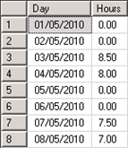

Summary of Hours by Month (for every day)
- date
2010-06-02 11:01
- author
admin
- category
general
- tags
dates, invoice, month, recursion, sql
- slug
summary-of-hours-by-month-for-every-day
- status
published
I recently read Mark Forster’s time management book Do It Tomorrow. In summary it suggests creating a task list on a daily basis, and not doing anything other than from items in that list. Only real emergencies should be dealt with.
If emails arrive that have to be dealt with then add them to tomorrow’s list ?” that way you have a chance of completing your tasks for a day, and can switch off the computer feeling that you’re finished for the day.
There is also a chapter at the end of the book that says anytime invested in improving systems and processes is time gained. This fits in with the ethos of many programming books ?” to automate things as much as possible.
As I work on a number of different client projects I use a time tracking database to enter hours worked on a daily basis. It is fairly trivial to get a summary of hours for a month, but what I needed to provide (for invoicing) was a full list of days in a month and hours worked ?” whether there were values or not.
Solution
To test the solution you can create a temporary table to mock the hours worked for a project. Running the following SQL should produce a table similar to below:

Now to create a list of dates for the previous month use the following SQL:
AS Hours | FROM LastMonthsDates | LEFT OUTER JOIN #WorkingHours WH ON | DATEDIFF(d, [calendardate], [Date]) = 0 AND WH.ProjectId = 18 | GROUP BY [calendardate] | ORDER BY [calendardate] ASC[/sql]
This should produce a record for each day similar to the output below (using the UK date format):
This SQL was built up from a variety of source. To get the last day of the previous month I used the code from here. The code for creating a range of dates is based on the ideas in this blog post.
However the use of recursion to create the calendar table is not recommended for large date ranges due the performance issues discussed here. In cases where yearly reports need to be generated it is suggested creating a full table of dates in your database and joining to this rather than creating it dynamically.
Finally it took me a while to realise that to limit records in the WorkingHours table (for example by ProjectId, or a UserId) the WHERE clause should be added to part of the join, otherwise records are excluded. So rather than:
I needed to use:
Thanks to this forum post for pointing out that the WHERE conditions should be moved to the ON clause.
- orphan
Comments
Add Comment